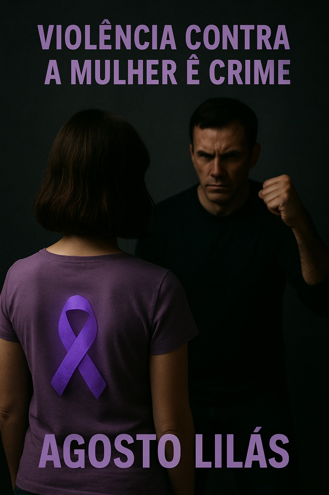

A violência contra a mulher é um problema grave e real que acontece todos dias. Muitas vezes, acontece dentro de casa e é silenciosa, escondida, ignorada. Precisamos falar sobre isso e combater todas as formas de violência.
Existem diferentes tipos de violência: fíśica, piscológica, moral, sexual e patrimonial. Todas são graves e causam muito sofrimento.
Denunciar é um ato de coragem, Se você precensiar ou sofrer, proucure ajuda
Disque 180 - Central de atendimento á Mulher. Funciona 24 horas, é gratuito e anônomo.
Campanha do Agosto Lilás